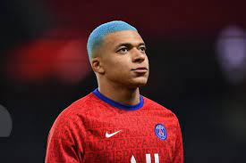

Mbappe stood as the world's best striker in name and reality. At an early age, he quickly established himself in the French national team as well as his own team. He was the core of the winning team of the 2018 World Cup in Russia, and he is an indispensable player in Paris Saint-Germain. have considerable influence He has scored 30 goals and 9 assists in 36 games this season. He has 20 goals and 6 assists in League One, ranking first in scoring. No wonder there are many teams that want him. Mbappe has become the main character in the transfer rumor that he can leave the team every year. Recently, Real Madrid and Liverpool have been connected. Spanish media "Football Espana" said on the 28th (Korean time) that Mbappe has not renewed his contract with Paris Saint-Germain. His contract ends in 2022. If you let it go after being released as an FA, you will lose it for free. To prevent this, Paris Saint-Germain could be sent away this summer.

"If Mbappe leaves Paris Saint-Germain, he prefers Real Madrid the most. Liverpool is one of the candidates. Mbappe is expected to make a decision after the Euro 2020. Mbappe declared his absence from the Tokyo Olympics, according to local media. The move is aimed at reducing the physical burden and securing time to decide where to go in the summer. " Mbappe has only one year left on his contract," the media said. However, the transfer fee was set at 200 million euros.